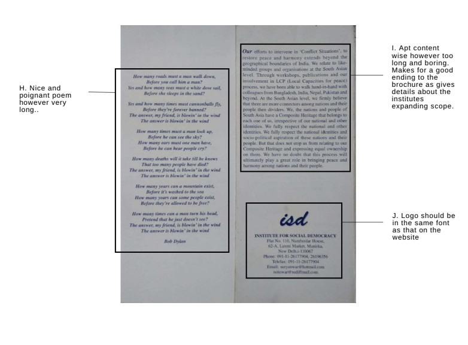

Brochure Redesign
A redesign of brochure distributed by Institute for Social Democracy, Delhi
Introduction and Background
Institute for Social Democracy (ISD) came into existence in 2004. ISD came up with the concept of “Composite Heritage” as a tool for conflict resolution and violence prevention and to bring out the shared culture heritage that has taken shape over a long period of time to unite people and mitigate conflicts caused due to differences. It strives for a secular and democratic society that is intolerant to any form of exploitation. It is also a part of various civil society networks focusing on minority rights, human rights and peace. It closely cooperates with gender-justice-oriented and feminist groups and organisations.
Content Analysis of the Existing Brochure

Usability Study of the Existing Brochure
Aims:
> Evaluate the effectiveness of the reading material provided by ISD
> Study the user perception of the information and the way of presentation of information by these mediums
> Assess user perception and the amount of knowledge gained after going through one of these materials
> Device strategies to popularize the material and facilitate the growth of both the institute and the concept
Final Redesign